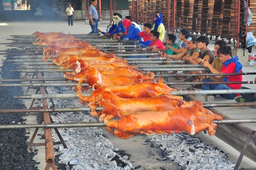
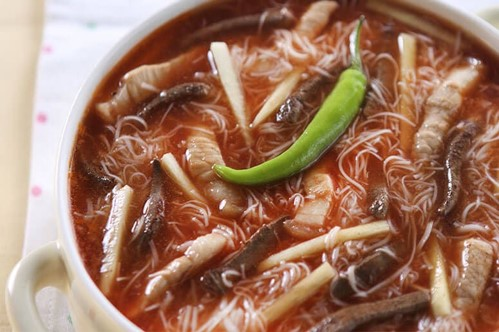
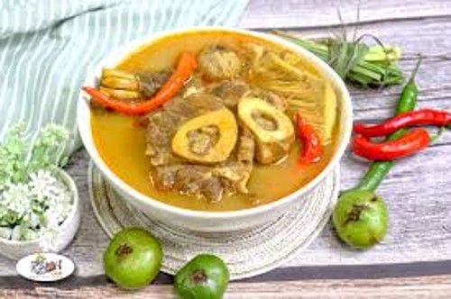
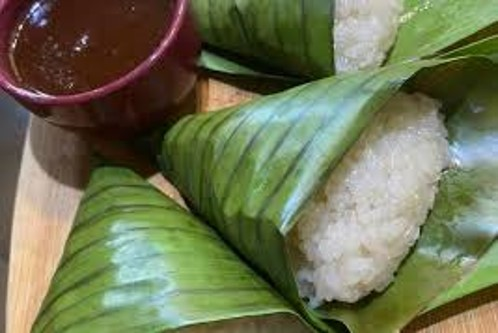
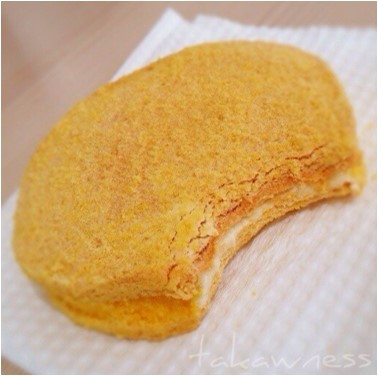

Lechon, or roasted pig, is the most famous dish from Cebu and is often hailed as the best lechon in the Philippines. The skin is crispy, and the meat is juicy and flavorful, marinated with herbs and spices. One of the famous foods and can be found at different places.
Batchoy is a hearty noodle soup made with miki noodles, pork innards, liver, and a flavorful broth topped with crunchy chicharon (pork cracklings). It’s a comforting dish perfect for rainy days. Iloilo City is the birthplace of Batchoy, and two famous spots here are Deco’s Original La Paz Batchoy and Ted’s Old-Timer La Paz Batchoy.
Kansi is a sour beef soup, a cross between Bulalo and Sinigang. It's made with beef shank and marrow, flavored with a sour fruit called "batwan" that gives it a distinct, tangy taste.
Puto Maya is a sticky rice delicacy often paired with "sikwate" (local hot chocolate made from pure cacao). It’s a classic Visayan breakfast or snack. Can be found at the streets.
Silvanas are frozen cookies made from cashew-meringue wafers, buttercream, and cookie crumbs. They are a signature delicacy from Dumaguete, with a crispy exterior and creamy filling. Dumaguete City, is the best place to try silvanas, as they are the original makers of this delightful treat.
